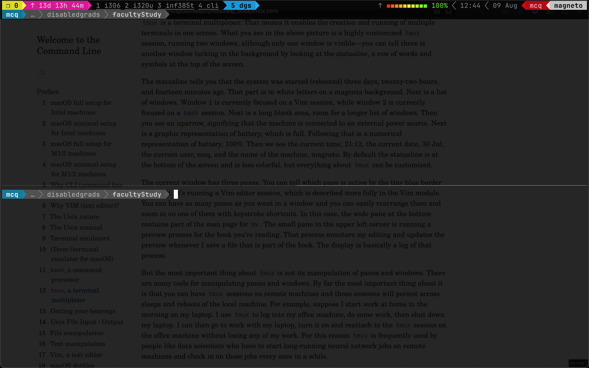

14 tmux, a terminal multiplexer
tmux panes in one windowtmux is a terminal multiplexer. That means it enables the creation and running of multiple terminals in one screen. What you see in the above picture is a highly customized tmux session, running two windows, although only one window is visible—you can tell there is another window lurking in the background by looking at the statusline, a row of words and symbols at the top of the screen.
The statusline tells you that the system was started (rebooted) three days, twenty-two hours, and fourteen minutes ago. That part is in white letters on a magenta background. Next is a list of windows. Window 1 is currently focused on a Vim session, while window 2 is currently focused on a bash session. Next is a long blank area, room for a longer list of windows. Then you see an uparrow, signifying that the machine is connected to an external power source. Next is a graphic representation of battery, which is full. Following that is a numerical representation of battery, 100%. Then we see the current time, 21:12, the current date, 30 Jul, the current user, mcq, and the name of the machine, magneto. By default the statusline is at the bottom of the screen and is less colorful, but everything about tmux can be customized.
The current window has three panes. You can tell which pane is active by the tiny blue border around it. It’s running a Vim editor session, which is described more fully in the Vim module. You can have as many panes as you want in a window and you can easily rearrange them and zoom in on one of them with keystroke shortcuts. In this case, the wide pane at the bottom contains part of the man page for mv. The small pane in the upper left corner is running a preview process for the book you’re reading. That process monitors my editing and updates the preview whenever I save a file that is part of the book. The display is basically a log of that process.
But the most important thing about tmux is not its manipulation of panes and windows. There are many tools for manipulating panes and windows. By far the most important thing about it is that you can have tmux sessions on remote machines and those sessions will persist across sleeps and reboots of the local machine. For example, suppose I start work at home in the morning on my laptop. I use tmux to log into my office machine, do some work, then shut down my laptop. I can then go to work with my laptop, turn it on and reattach to the tmux session on the office machine without losing any of my work. For this reason tmux is frequently used by people like data scientists who have to start long-running neural network jobs on remote machines and check in on those jobs every once in a while.
By the way, the screenshot above is of a partially transparent screen. Behind the tmux window, you can see a preview of the fileIO page of this book. The transparency is controlled by the terminal emulator, iTerm, that is running bash, which in turn is running tmux. When you want to change settings, you need to know which of several running programs is controlling those settings. Think of tmux as having settings that control window layout and its own statusline.
There are vastly many ways that people configure tmux sessions, as illustrated by this Stackoverflow question
As another example of a tmux configuration, I have three courses and two projects, so I open tmux with five split windows, using a shell script containing the following:
#!/bin/bash
tmux new-session -n i306 -c ~/courses/stats \; \
split-window -v -c ~/courses/stats \; \
new-window -n i320u -c ~/courses/infointeractdsgn/ \; \
split-window -v -c ~/courses/infointeractdsgn/ \; \
new-window -n inf385t -c ~/courses/uxproto/ \; \
split-window -v -c ~/courses/uxproto/ \; \
new-window -n cli -c ~/courses/cli \; \
split-window -v -c ~/courses/cli \; \
new-window -n dgs -c ~/research/disabledgrads/facultyStudy/ \; \
split-window -v -c ~/research/disabledgrads/facultyStudy/All the above script does is to name five windows and change to the appropriate directory for each window. The following screenshot shows the result after running this script. The current window tab has a blue background. The others are underlined because some activity has happened in them since the last time they were in the foreground.

tmux windows in one session, the current window having two panes